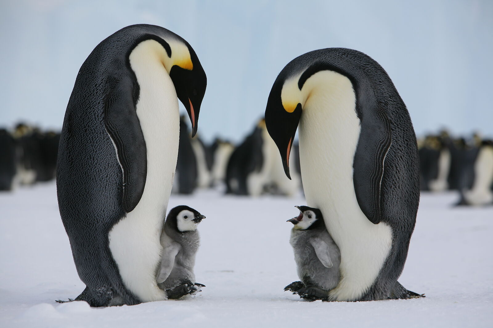

Introduction
This page introduces the emperor penguin, a large flightless bird that lives around Antarctica. It spends time on sea ice and hunts for food in the ocean. It is my favourite bird because of its cute appearance and the way parents work together to care for their chick.
Quick facts
| Feature | Details |
|---|---|
| Scientific name | Aptenodytes forsteri |
| Size | About 101-132cm tall |
| Wingspan | About 76-89cm; wings work as flippers |
| Weight | About 25-45kg, depending on the season |
| Lifespan | About 15-20 years in the wild |
| Conservation status | Endangered, according to IUCN's 2026 assessment |
Appearance
Adult emperor penguins have dark backs, white bellies, and pale yellow patches on the sides of their necks. Males and females look similar, but males are usually larger.
Chicks have fluffy grey feathers, black heads, and white cheeks. Older juveniles have palar neck patches than adults. Emperor penguins look like king penguins, but emperors are larger and have broader, palar neck patches.
Habitat and ranges
Emperor penguins live around Antarctica and feed in the surrounding ocean. Most breading colonies are on sea ice attached to the coast, near openings where adults can enter the water to find food.
Emperor penguins do not live in the wild in British Columbia, so there are no local wild viewing locations for this species.
Diet and behaviour
Emperor penguins eat:
- Fish
- Squid
- Krill
They dive underwater to catch food and use their flippers to swim. They cannot fly through the air. They make loud calls to communicate and gather in large colonies. During cold weather, they huddle together to stay warm.
Nesting and life cycle
Emperor penguins do not build nests. They keep their egg and young chick warm on their feet.
- Adults travel to their breeding colonies in the Antarctic autumn.
- The female lays one egg and passes it to the male. She then returns to the sea to find food.
- The male keeps the egg on his feet under a fold of skin until it hatches.
- After the female returns, both parents take turns feeding and caring for the chick.
- By summer, the chick develops waterproof feathers and leaves for the sea.
Their seasonal movements take them between breading colonies and feeding areas in the ocean.
Threats and conservation
Climate change is the main threat to emperor penguins. They need stable sea ice to raise their chicks. If the ice breaks up before the chicks develop waterproof feathers, many chicks may die.
People can help by supporting action to reduce greenhouse gas emissions and protect Antarctic habitats. Scientists monitor colonies to learn how their populations are changing.
Fun facts
- Emperor penguins are the largest living penguins.
- They breed during the Antarctic winter.
- Males keep the egg warm on their feet.
- They can dive more than 500 metres deep.
- They huddle together to survive freezing weather.